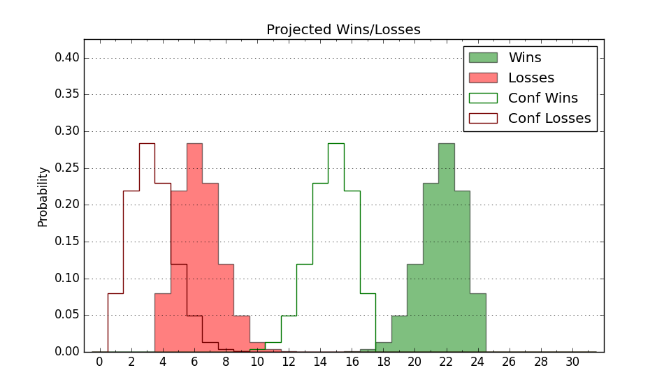

| Home | Game Probabilities | Conferences | Preseason Predictions | Odds Charts | NCAA Tournament |
| City: | Boone, North Carolina | |
| Conference: | Sun Belt (2nd)
| |
| Record: | 4-1 (Conf) 11-4 (Overall) | |
| Ratings: | Comp.: 11.0 (77th) Net: 12.9 (68th) Off: 106.5 (132nd) Def: 93.5 (27th) SoR: 22.3 (78th) |
| Remaining | ||||||
|---|---|---|---|---|---|---|
| Date | Opponent | Win Prob | Pred. | |||
| 1/17 | Georgia St. (190) | 87.3% | W 75-62 | |||
| 1/20 | Coastal Carolina (307) | 95.5% | W 81-59 | |||
| 1/25 | Georgia Southern (327) | 96.6% | W 81-57 | |||
| 1/27 | James Madison (79) | 65.6% | W 74-69 | |||
| 2/1 | @ Georgia St. (190) | 66.8% | W 71-66 | |||
| 2/3 | @ Georgia Southern (327) | 89.4% | W 76-62 | |||
| 2/7 | @ Texas St. (230) | 73.1% | W 66-60 | |||
| 2/15 | Marshall (207) | 88.5% | W 78-63 | |||
| 2/17 | Louisiana Lafayette (160) | 84.3% | W 73-62 | |||
| 2/22 | @ Old Dominion (262) | 78.4% | W 73-64 | |||
| 2/24 | @ Marshall (207) | 69.3% | W 74-68 | |||
| 2/28 | Old Dominion (262) | 92.5% | W 77-60 | |||
| 3/1 | Arkansas St. (183) | 86.9% | W 78-65 | |||
| Previous | Game Score | |||||
| Date | Opponent | Win Prob | Result | Off | Def | Net |
| 11/11 | @Northern Illinois (226) | 72.7% | L 78-91 | -7.6 | -17.9 | -25.5 |
| 11/14 | @Oregon St. (158) | 60.6% | L 71-81 | -4.6 | -10.8 | -15.4 |
| 11/21 | (N) UNC Wilmington (116) | 63.2% | W 86-56 | 25.2 | 16.5 | 41.7 |
| 11/22 | (N) Murray St. (147) | 71.5% | W 67-57 | -11.7 | 15.7 | 4.0 |
| 11/26 | Austin Peay (222) | 89.8% | W 78-58 | 11.5 | 5.1 | 16.6 |
| 11/29 | East Tennessee St. (238) | 90.5% | W 72-61 | 5.3 | -2.5 | 2.8 |
| 12/3 | Auburn (10) | 26.5% | W 69-64 | 13.3 | 9.9 | 23.2 |
| 12/13 | @Queens (287) | 82.7% | W 93-81 | 22.4 | -19.5 | 2.9 |
| 12/16 | (N) Gardner Webb (236) | 83.6% | W 80-59 | 6.7 | 3.9 | 10.5 |
| 12/21 | (N) UNC Asheville (165) | 74.8% | L 63-76 | -19.0 | -13.2 | -32.3 |
| 12/30 | Louisiana Monroe (341) | 97.3% | W 67-55 | -11.9 | -1.3 | -13.3 |
| 1/4 | @South Alabama (239) | 74.0% | W 91-84 | 10.3 | -9.7 | 0.6 |
| 1/6 | @Troy (169) | 62.8% | L 62-66 | -9.6 | -1.1 | -10.7 |
| 1/11 | @Coastal Carolina (307) | 86.1% | W 70-45 | -3.3 | 24.4 | 21.1 |
| 1/13 | @James Madison (79) | 35.8% | W 59-55 | -8.9 | 21.0 | 12.0 |
| Stats & Trends | |||||
|---|---|---|---|---|---|
| Current | Day | Week | Month | Season | |
| Composite | 11.0 | -0.0 | +2.2 | +0.5 | +11.9 |
| Comp Rank | 77 | -1 | +13 | -1 | +96 |
| Net Efficiency | 12.9 | -0.0 | +2.0 | -4.1 | -- |
| Net Rank | 68 | -- | +9 | -24 | -- |
| Off Efficiency | 106.5 | +0.0 | -1.0 | -6.9 | -- |
| Off Rank | 132 | -- | -17 | -86 | -- |
| Def Efficiency | 93.5 | -0.0 | +3.0 | +2.8 | -- |
| Def Rank | 27 | +1 | +32 | +36 | -- |
| SoS Rank | 183 | -2 | +27 | -38 | -- |
| Exp. Wins | 21.7 | +0.0 | +1.3 | +0.2 | +6.6 |
| Exp. Conf Wins | 14.7 | +0.0 | +1.3 | +0.7 | +4.4 |
| Conf Champ Prob | 59.7 | +0.6 | +27.1 | +22.7 | +48.9 |

| Advanced Stats | ||
|---|---|---|
| Stat | Value | Rank |
| Off Eff FG % | 0.517 | 130 |
| Off Ast Ratio | 0.154 | 100 |
| Off ORB% | 0.271 | 193 |
| Off TO Rate | 0.137 | 106 |
| Off FT Ratio | 0.262 | 326 |
| Def Eff FG % | 0.459 | 42 |
| Def Ast Ratio | 0.131 | 98 |
| Def ORB% | 0.251 | 91 |
| Def TO Rate | 0.143 | 231 |
| Def FT Ratio | 0.218 | 6 |